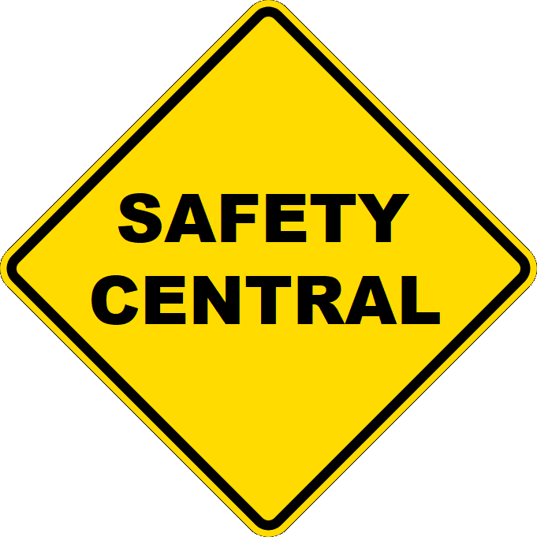

The WSMAC blog
by Dennis Marrotte, September 2022
Enjoy this magical time of the year while being careful outside in falling temperatures.
by Kimberly Tarbox, September 2022
As the seasons change so must our traveling habits. We need to pay closer attention to our surroundings.
by John Brooking, September 2022
Bicyclists are not ever legally compelled to put themselves in danger, including by riding too close to parked cars.
by Walnut, September 2022
Find these words in the wordsearch.
by Dennis Marrotte, May 2022
Before you open the door, make sure there are no vehicles approaching your driver's side.
by John Brooking, May 2022
Gas prices got you down? Eyeing that unused bike, wondering if you could use it to get to work, or school, or the grocery store?
by John Brooking, March 2022
Here we are in the middle of winter. Can you still cycle in the winter? Yes! But you definitely need to prepare. Here are the most important ways.